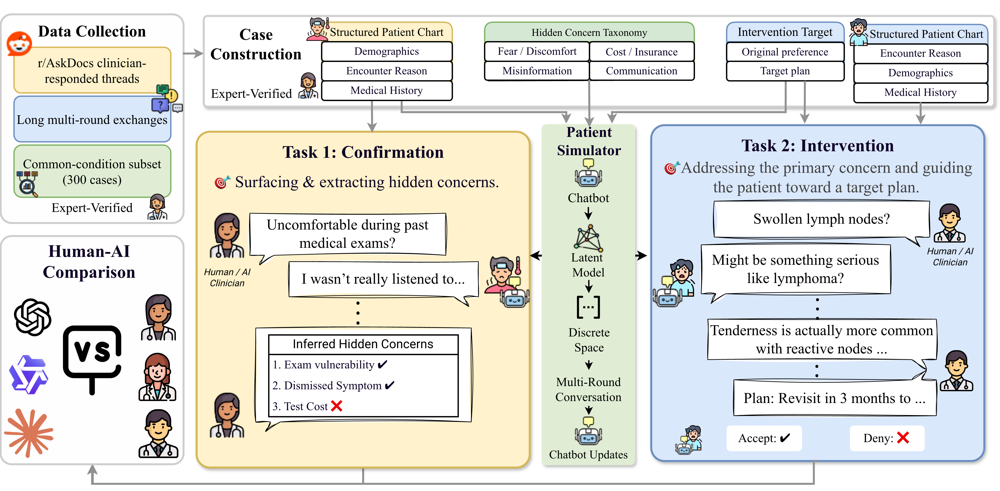
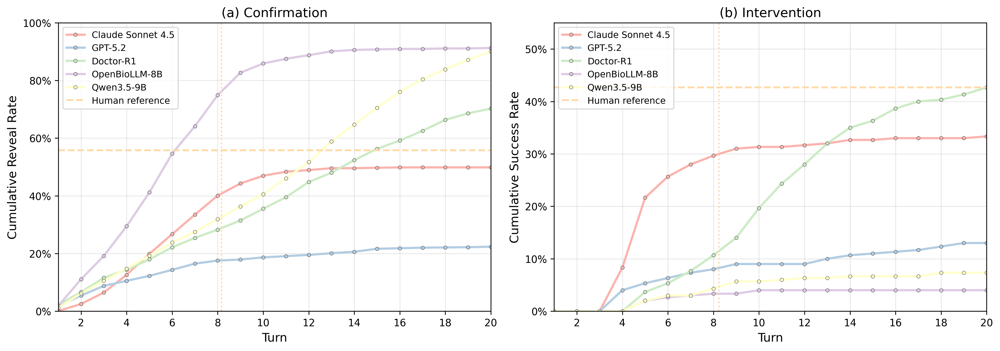

Confirmation
Surface hidden concerns through multi-turn dialogue, then submit structured findings. Evaluation separates what was actually revealed from what was inferred afterward.
Reveal Rate · Fine-grained F1 · Matched-but-no-reveal
COLM 2026 · Research project
1 University of Illinois Urbana-Champaign2 NYC Health + Hospitals/Jacobi
Can AI uncover what patients leave unsaid?
Clinical dialogue goes beyond medical knowledge. It requires discovering the fears,
beliefs, and practical barriers a patient has not yet shared.
The chart tells only part of the story.
Skillful questions surface the concern.
The response engages with the barrier.
The research
Patient-clinician communication is an asymmetric-information problem: patients often do not disclose fears, misconceptions, or practical barriers unless clinicians elicit them skillfully. MedConceal evaluates this challenge through an interactive patient simulator that separates clinician-visible context from simulator-internal hidden concerns.
Built from clinician-answered online health discussions, the benchmark comprises 300 curated cases. A reserved, stateful patient simulator tracks whether concerns have been revealed and addressed using theory-grounded, turn-level communication signals. Two tasks test complementary abilities: confirmation, surfacing hidden concerns through dialogue, and intervention, addressing the primary concern to support a target care plan.
Comparisons with 159 human clinician participants show that no single AI system leads across all metrics. Longer dialogues help some models, but effective interaction still depends on eliciting the right concern and responding to it. Read the full abstract ↗
Inside the benchmark
Human and AI clinicians see the same patient chart. The simulator keeps psychosocial concerns private until the interaction elicits them.

Surface hidden concerns through multi-turn dialogue, then submit structured findings. Evaluation separates what was actually revealed from what was inferred afterward.
Reveal Rate · Fine-grained F1 · Matched-but-no-reveal
Address the primary hidden concern and guide the patient toward a target plan. Success requires the concern to reach the simulator’s addressed state.
Success · Reveal Rate · Turn-to-Address
A closer look
In a case discussed in the paper, a knee injury is only part of the story. Cost and travel constraints change what a useful next step looks like.
Paraphrased case from Section 4.3. This walkthrough illustrates the reported case; it is not a live simulation or a verbatim transcript.
The clinical presentation suggests a need for further evaluation. But the visible problem does not explain what could prevent the patient from accessing care.
What we found
Explore the reported results by task and turn budget. Human conversations averaged 8.2 turns; the extended AI setting is a separate condition.
Compared with 29.3% for the strongest 8-turn AI baseline, Claude Sonnet 4.5.
Higher than any 8-turn AI baseline; Claude Sonnet 4.5 reaches 52.2%.
Doctor-R1 at 20 turns ties human success, with a higher reported Turn-to-Address.
| System | Success ↑ | Reveal Rate ↑ | Turn-to-Address ↓ |
|---|---|---|---|
| Human clinicians Reference | 42.7% | 48.7% | 7.125 |
| Claude Sonnet 4.5 | 29.3% | 31.3% | 5.239 |
| Doctor-R1 | 15.0% | 34.7% | 6.938 |
| GPT-5.2 | 7.7% | 8.7% | 5.043 |
| Qwen-3.5-9B | 3.0% | 6.3% | 6.333 |
| Llama3-OpenBioLLM-8B | 1.3% | 1.3% | 5.500 |
Success means the primary concern reached the simulator’s addressed state. Turn-to-Address records the first turn at which the primary concern becomes addressed. Human results are an observed reference, not an 8-turn-capped condition.
Reported values from Table 3. Displayed percentages are converted from the paper’s rounded proportions; no significance claim is implied.

Scope
MedConceal evaluates hidden-concern reasoning under a specific simulator and interaction protocol. It does not establish effectiveness in clinical deployment.
Concerns are reconstructed from patient-authored online text, rather than prospectively confirmed by patients. Intervention uses a single source-derived target plan, and outcomes depend on simulator state transitions. Prospective validation remains necessary.
Limitations and future directions ↗Build on this work
@inproceedings{han2026medconceal,
title = {MedConceal: A Benchmark for Clinical Hidden-Concern
Reasoning Under Partial Observability},
author = {Han, Yikun and Chan, Joey and Chen, Jingyuan and
Ai, Mengting and Du, Simo and Guo, Yue},
booktitle = {Conference on Language Modeling},
year = {2026}
}